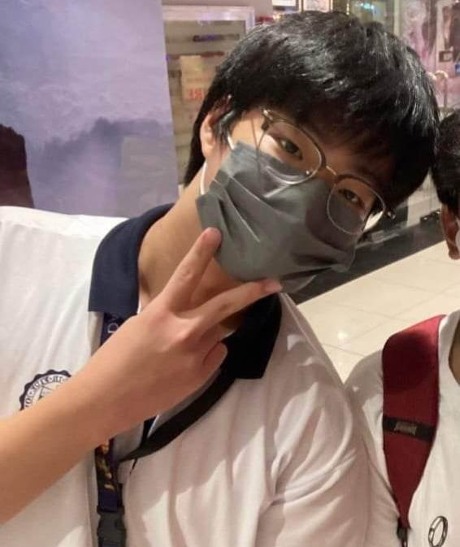

1. Background
 The SAKADAB community faces the problem of providing timely health assistance to its inhabitants, especially given the community's financial difficulties and geographic constraints.
The SAKADAB community faces the problem of providing timely health assistance to its inhabitants, especially given the community's financial difficulties and geographic constraints.
Our partner institutions receive no direct healthcare because they cannot afford to purchase over-the-counter medications on a regular basis.
The area is also far from the most affordable hospital available, the Southern Philippines Medical Center (SPMC).
Residents must contact an ambulance for a medical check-up or hospital admission in order to be transported.
There is a hospital nearby, but it is privately owned, making its products and services costly. This issue is tied to our business objectives because we wish to help our partner institutions with the challenges they are experiencing,
primarily those that have occurred since the pandemic.
2. Significance
This project is important, especially to the SAKADAB members because it can improve their way of living.
Specifically matters regarding health wherein it gives them a chance to maintain a healthy and resilient community. It is also crucial to us, students,
as it gives us an opportunity to practice the values we've learned and contribute to the contentment of the said community. Lastly, it is important to the general public because it will inspire them to help the unfortunate.
Being men and women for others, especially to PWDs like the SAKADAB resident, is what we want the general public to understand.
3. Problem Identification
 The main problem that the team wants to address is the community’s issue with its residents’ health.
The main problem that the team wants to address is the community’s issue with its residents’ health.
A lot of the members in the SAKADAB community have different issues regarding their health, especially since they’re disabled.
Furthermore, they also have health concerns such as the need for basic health kits and basic medicine for common diseases.
The team aims to help the members of the community with their health issues and at the same time provide assistance to the members of this community.
4. Proposed Intervention of the Project
The intervention that we intend to propose to address the problem discussed above is to serve the community just as the institution serves the community.
We can achieve this in a way of spreading awareness through the work that we do online for example the website that we made last quarter.
This can help spread awareness in a way of showing people all about the SAKADAB community and also giving them a second through about the people that reside in the SAKADAB community and in that way helping them in getting employed because the thought of them
is change by reading all about their lifestyle or the way they live and all in all helping the institution in the job they have to do in
coordination with SAKADAB. So the point is we can help the main problem in the SAKADAB community which is their health problems. As seen in the website that we made last quarter, we show that the SAKADAB community is a community of people with disabilities and people with
health problems which are excluded in society and through the help of our website and the intervention that we have we can help them and at least
make the people of the SAKADAB community feel better. Our proposed project is to have clinics and casual checkups on the people of the community.
About The Web Designer

The designer of this webpage is Junhyuk Eo, also known as Jake Eo. He is a South Korean immigrant who studies in Ateneo de Davao University.
He was born in Seoul, South Korea on 2007. He is currently in 9th grade and attends the Special Filipino Class for Foreigners.
He likes gaming and watching videos online as his past-time.
Sources:
Source 1
Source 2
Source 3
Back To Top